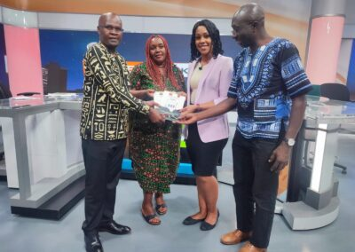
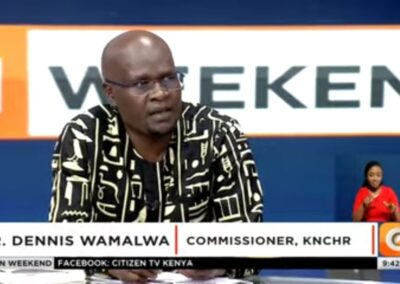

Setting the Stage: Understanding the Intersex Narrative in Kenya

In an enlightening discussion hosted by the celebrated anchor, Victoria, on Citizen TV, a trio of knowledgeable guests met to dismantle the stigma surrounding intersex individuals in Kenya and across the African continent. The conversation marked a major stride in the fight for recognition and against discrimination faced by the intersex community, coinciding with the introduction of the Intersex Persons Bill 2023.
Watch the Full Interview here
The Champions of Change
Victoria introduced the distinguished panel, starting with Dr. Dennis Wamalwa, a commissioner with the Kenya National Commission on Human Rights and the first intersex person to occupy a top public office in Kenya. Veronica Mwangi, the head of the Intersex Persons Implementation Coordination Committee Secretariat, and Eric Mukoya, a human rights and governance expert, completed the panel.
Debunking Myths: Who are Intersex Persons?
The conversation began by addressing the elephant in the room: who exactly are intersex persons? Veronica provided a clear and informative definition, highlighting that intersex individuals are born with ambiguous biological sex characteristics. By looking at anatomy, chromosomal makeup, hormones, and internal reproductive systems, we can understand the biological complexity of being intersex. 
Pioneering Progress: Dr. Wamalwa’s Journey
Dr. Wamalwa shared his personal journey as an intersex person in public office, correcting misconceptions about the third 'sex' marker and shedding light on the realities of intersex individuals. He emphasized that it's not a third 'gender' marker, as often misrepresented, but a 'sex' marker - a biological fact, not a social construct.
Stepping into the Light: The Call to Action
Highlighting the importance of his appointment, Dr. Wamalwa painted a picture of hope for the hidden intersex individuals across Kenya. He called on them to 'come out and be counted,' citing the discrepancy between the recorded population and the likely real population of intersex persons in the country.
"Facing the Challenges: The Intersex Journey towards Recognition"
The second part of the discussion was marked by an exploration of the unique challenges that intersex persons face, both socially and legally. The conversation turned towards the Intersex Persons Bill 2023 and the hopes pinned on this landmark legislation.
The Path Less Traveled: Wamalwa's Personal Challenges
Dr. Wamalwa opened up about the social challenges that he and many others have had to endure, including discrimination, rejection, and the myriad issues arising from societal misunderstandings. He highlighted the problems in marriages and educational difficulties faced by intersex persons.
Building Safeguards: The Intersex Persons Bill
Eric brought to the fore the essence of the new bill, underlining the four guiding principles: creating safe spaces, acting in the interest of intersex persons, involving intersex persons in decision-making, and the overarching principle of inclusion.
The bill is touted as a game-changer, proposing several key measures: recognition of intersex children at birth, introduction of the 'I' marker for intersex persons, banning medical actions or surgeries unless life-threatening, and safeguarding the rights to life, marriage, and education.
The Road Ahead: Inclusive Steps towards Progress
The dialogue drew to a close with Dr. Wamalwa outlining the ongoing efforts towards inclusivity. Collaborations with the Kenya Curriculum Development and medical institutions, interactions with the National Hospital Insurance Fund, and working with the Directorate of Criminal Investigations to address the unique needs of intersex individuals were all steps on this path.
The discussion may have ended, but it paved the way for a journey towards equality, acceptance, and recognition of intersex individuals in Kenya and beyond. This journey may be fraught with challenges, but with conversations like these, there is hope that the destination will be reached sooner rather than later.